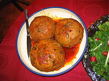

FAMOUS MUGHLAI DISHES ARE:-

BHOOKARS RATINGS-:


Biryani badshahi is a Hyderabadi biryani dish made with basmati rice and goat meat. Popular variations use chicken instead of goat.The blending of Mughlai and Andhracuisines in the kitchens of the Nizam, ruler of the historic Hyderabad State, resulted in the creation of mughlai Biryani.
WHERE TO EAT-TANUJA RESTAURANT(HYDERABAD)
 malai kofta
malai kofta
BHOOKARS RATINGS:-


Malai Kofta is a Middle Eastern and South Asian meatball or meatloaf. In the simplest form, koftas consist of balls of minced or ground meat — usually beef or plamb mixed with spices and/or onions. The vegetarian variety like lauki kofta, shahi aloo kofta are popular in India.
WHERE TO EAT-KATA RESTAURANT(HYDERABAD)

BHOOKARS RATINGS:-


Korma (sometimes spelled kormaa, qorma, kavurma, khorma, or kurma) is a dish originating in South Asia or Central Asia which can be made with yoghurt, cream, nut and seed pastes or coconut milk; it is usually considered a type of curry. Both vegetarian and non-vegetarian kormas exist.
WHERE TO EAT-KATA RESTAURANT (HYDERABAD)